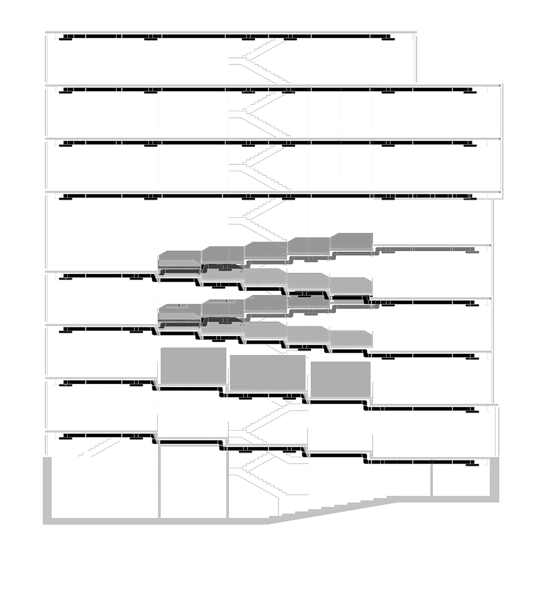
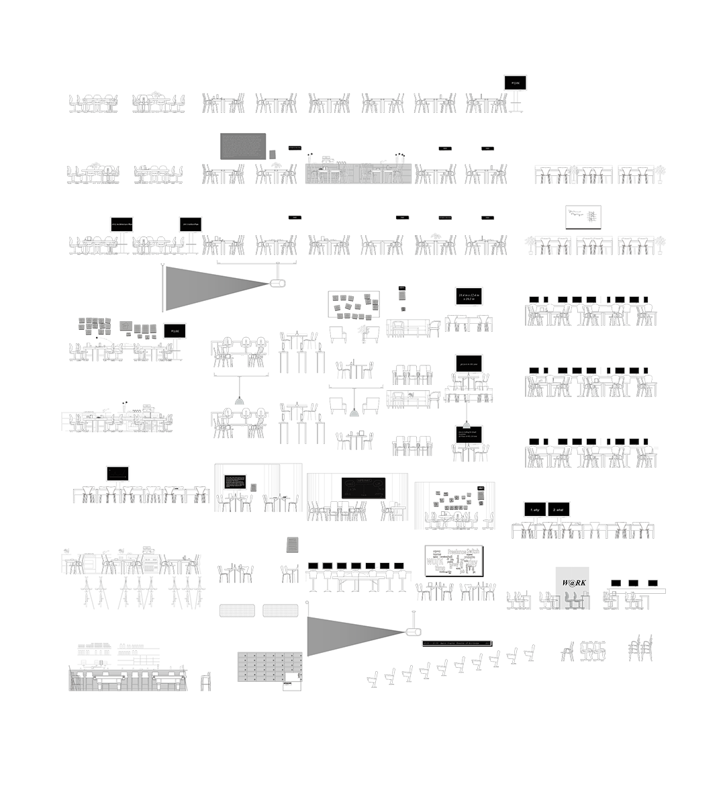
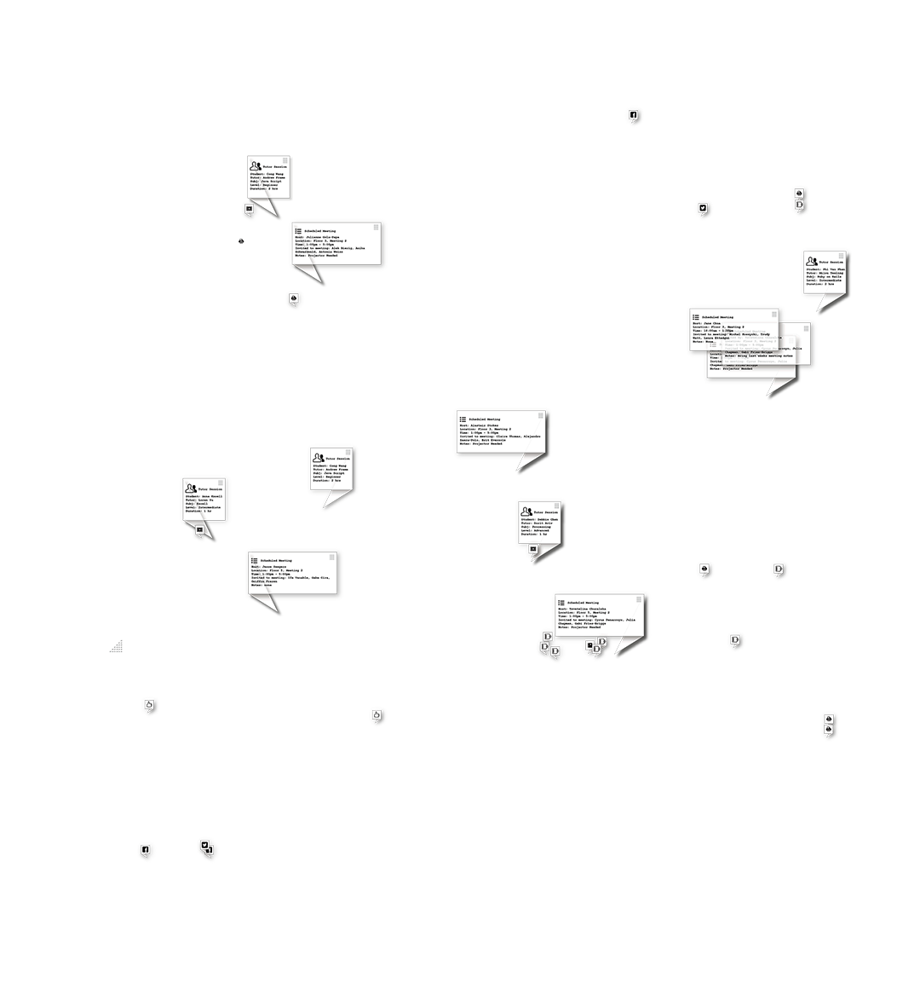
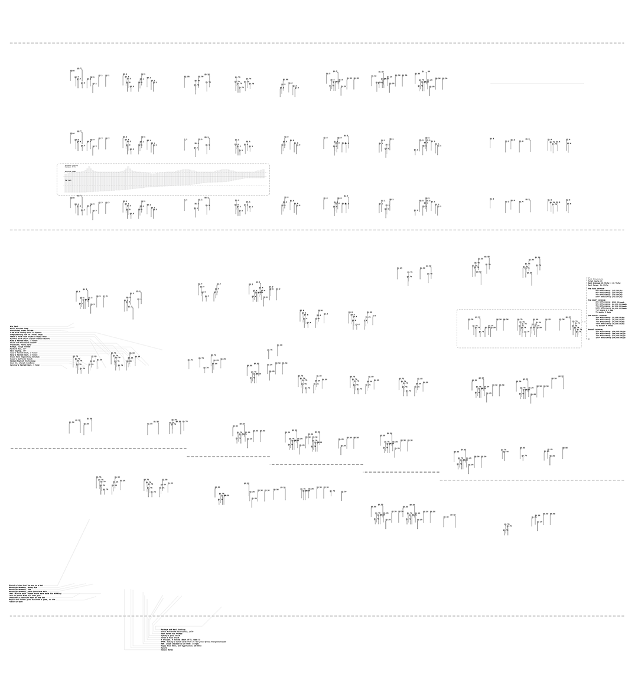
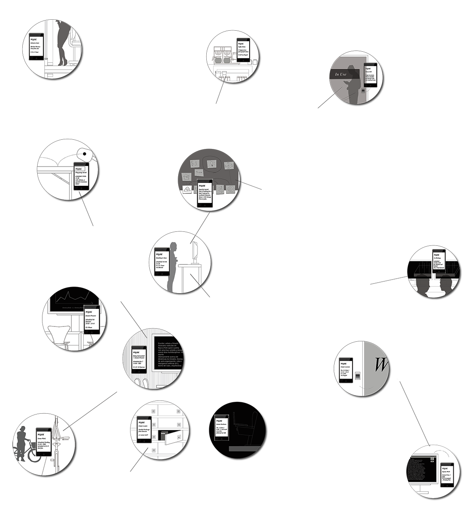

W@RK
W@RK is a design and business proposal rethinking working environment in the context of freelancing. It takes New York City - which has over 40,000 freelancers - as a testing site to conduct mapping research, street interviews, spatial documentation and design experiments. W@RK proposes a new comprehensive co-working model that intergrates sharing economy, dynamic pricing, spatial customization and social networking. Its ambition is simple and bold: Can a freelancer have an instant and productive co-working envrionment at a price of avg. $1/hour in New York City?
W@RK was created by Fei Wang and Linsay May, with the support of Princeton University and the New Museum in New York. The project has been exhibited at the Bowery City Fest in 2013.
Scroll down to watch the stories of W@RK and play with the interactive spatial sections.
W@RK was created by Fei Wang and Linsay May, with the support of Princeton University and the New Museum in New York. The project has been exhibited at the Bowery City Fest in 2013.
Scroll down to watch the stories of W@RK and play with the interactive spatial sections.





© 2010 - 2015 Studiowangfei | All Rights Reserved